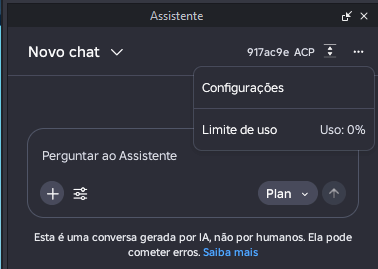
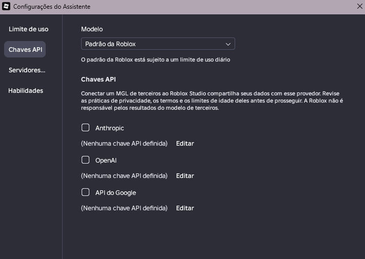
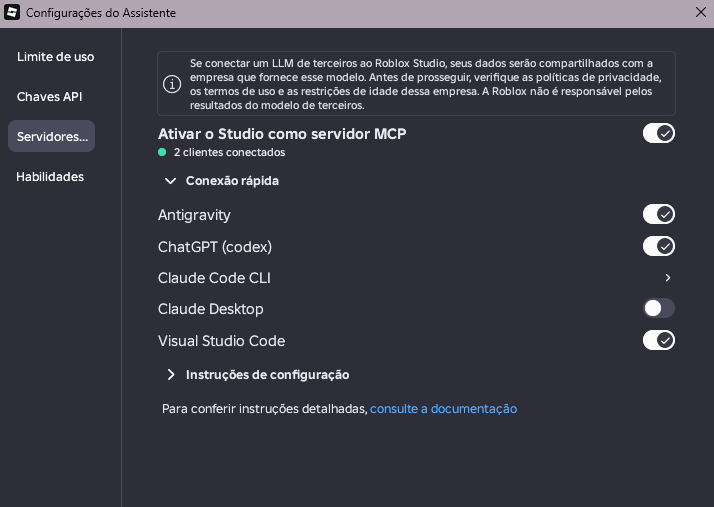

Precision Builder
Documentation
Illustrated Roblox Studio MCP setup and project information.
Precision Builder is an AI-assisted development tool for Roblox Studio, part of Axiom Engine.
Features (Planned)
- AI-assisted 3D building
- Script editing and creation
- Google Antigravity and OpenAI Codex integration
- Shared project context and task coordination
Installation
Installation instructions will be available when the first version is released.
Visual Setup Guide
Follow these screenshots from Roblox Studio. Images are shown inline as part of the setup guide.
1. Open Assistant settings / Abrir configurações do Assistente
Open the Assistant (Assistente) panel and select Settings (Configurações) from its menu.

2. API Keys / Chaves API (optional / opcional)
The API Keys (Chaves API) tab is for configuring third-party models. It does not activate the Studio MCP Server. Never share private API keys. / A aba Chaves API configura modelos de terceiros; ela não ativa o servidor MCP do Studio. Nunca compartilhe chaves privadas.

3. Enable Studio as an MCP Server / Ativar o Studio como servidor MCP
In Servers (Servidores), enable Activate Studio as MCP Server (Ativar o Studio como servidor MCP). Under Quick Connect (Conexão rápida), enable Antigravity or ChatGPT (Codex). Check the connected-client indicator (clientes conectados).

Required: Enable Roblox Studio MCP Server
To use AI-assisted features, open Roblox Studio's Assistant (Assistente) settings, select Servers (Servidores), and enable Activate Studio as MCP Server (Ativar o Studio como servidor MCP). Under Quick Connect (Conexão rápida), enable the clients you intend to use, such as Antigravity and ChatGPT (Codex). Confirm that the clients are connected before attempting AI operations. The exact menu names and available integrations may change with Roblox Studio updates.
The Assistant's API Keys tab is a separate configuration area. Do not publish API keys, access tokens, or private credentials.
Recommended AI Plans (Optional)
For a smoother experience during longer development sessions, we recommend considering the following paid plans when they fit your needs and budget:
- Google AI Pro — recommended for developers using Google Antigravity, for potentially higher usage allowances depending on current plan benefits and availability.
- ChatGPT Plus — recommended for developers using OpenAI Codex, for access and usage allowances according to current OpenAI plan terms.
These subscriptions are not required by Axiom Engine itself. Free tiers or other eligible plans may work, subject to their limits. Subscriptions do not guarantee unlimited credits, unrestricted MCP access, or compatibility with every feature. Check the providers' current plan details before subscribing.
Axiom Engine is an independent project maintained in my free time alongside work, school, and other responsibilities. Development time is limited, so updates may be irregular and no fixed release schedule is guaranteed. I will keep improving the project whenever possible, prioritizing stability and quality over rushed releases. Thank you for your patience and support.
License
Precision Builder is free to use. Check the repository LICENSE file for details.